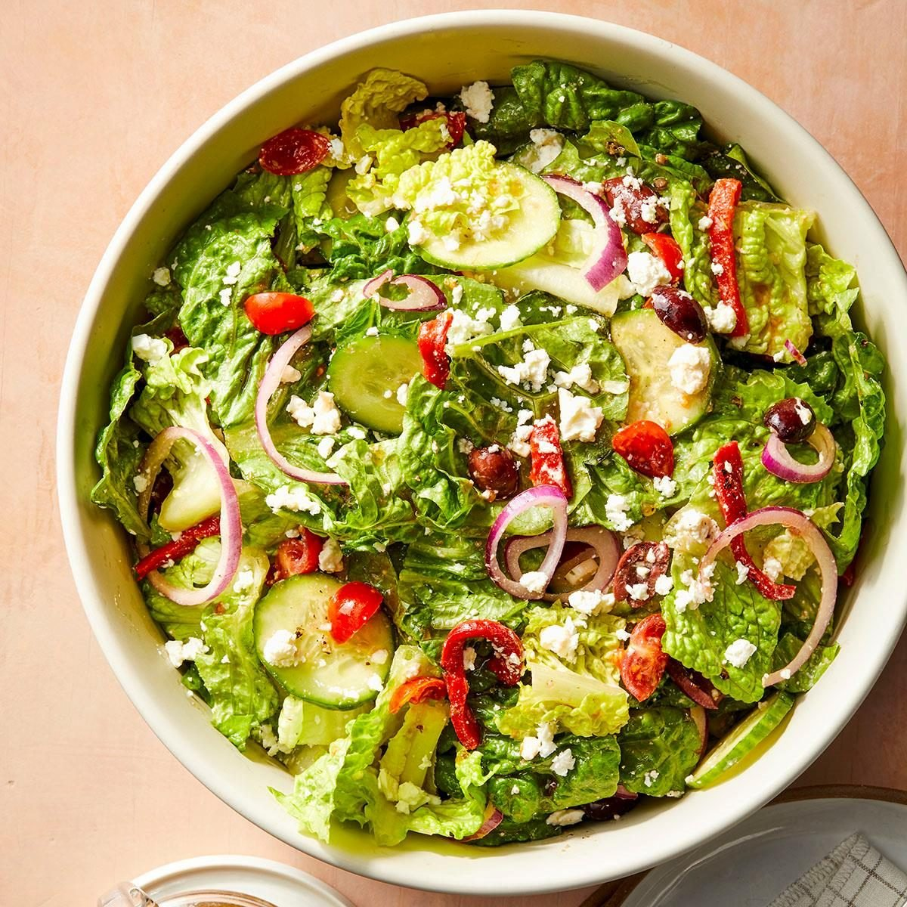

Salad

Description
Ingredients
- Mixed salad greens (lettuce, spinach, arugula, etc.)
- Cherry tomatoes (halved)
- Cucumber (sliced)
- Red onion (thinly sliced)
- Carrots (shredded or sliced)
- Bell pepper (sliced)
- Olives (optional)
- Feta cheese or shredded cheese (optional)
- Croutons (optional)
- Salad dressing (vinaigrette, ranch, etc.)
Steps
- Wash and dry all the salad greens and vegetables thoroughly.
-
Chop or slice the vegetables as desired (tomatoes, cucumber, onion,
carrots, bell pepper, etc.).
-
In a large bowl, combine the salad greens with the chopped vegetables.
- Add any optional ingredients like olives, cheese, or croutons.
- Toss the salad gently to mix everything evenly.
- Drizzle your favorite dressing over the salad.
- Toss again lightly to coat the salad with the dressing.
- Serve immediately and enjoy!
Home